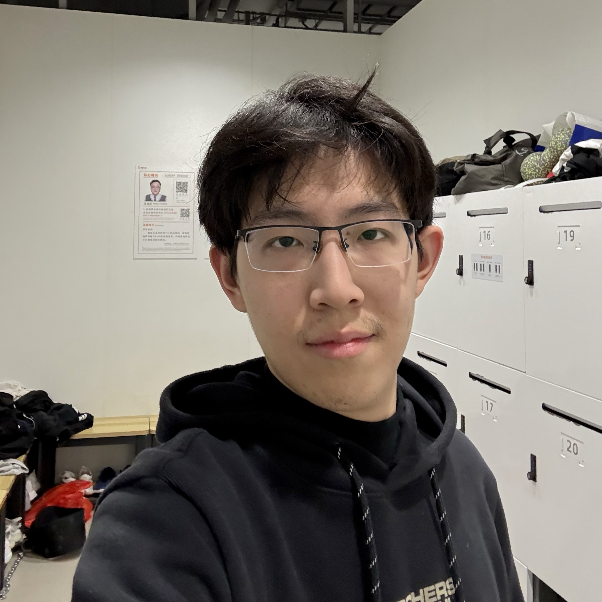
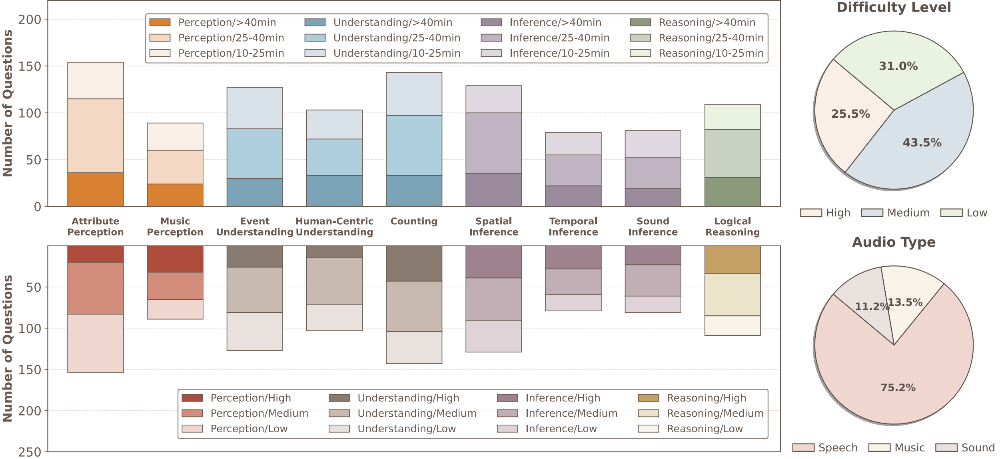
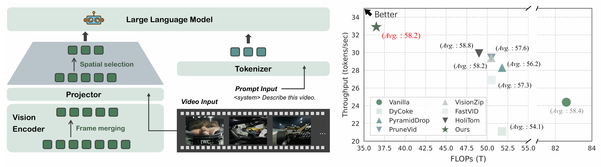
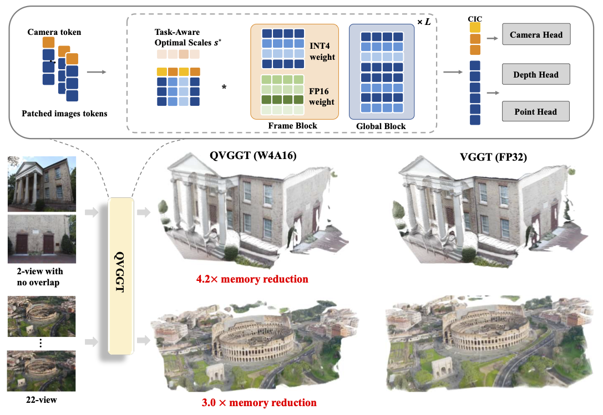
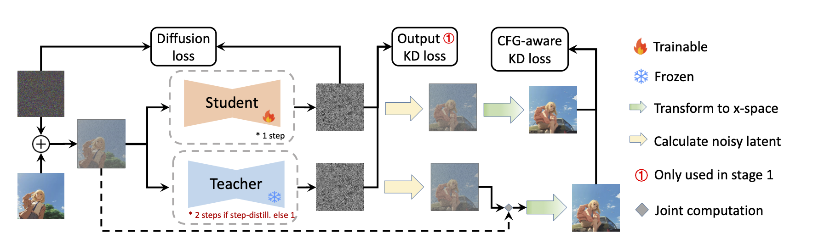

|
Hesong Wang 王鹤淞 Hi👋🏻, I'm Hesong Wang, currently a first-year PhD student at Westlake University in a joint program with Zhejiang University, advised by Prof. Huan Wang. Previously, I received my B.E. degree from BUPT in 2025. My research interests lie in multimodal large language models (e.g., VideoLLMs), inference performance optimization, and general efficient AI. |
 |
{kind=link}
🔥 News
- 2026.03 ✨ [Benchmark] We are very proud to launch LVOmniBench, the pioneering comprehensive evaluation benchmark of OmniLLMs in Long Audio-Video Understanding Evaluation! The dataset is available at [Hugging Face] and [GitHub].
- 2026.02 🎉 [CVPR'26] EarlyTom and QVGGT are accepted by CVPR 2026!
- 2026.01 🎉 [ICLR'26] OBS-Diff is accepted by ICLR 2026! Congrats to Junhan!
📖 Publications
arXiv 2026

LVOmniBench: Pioneering Long Audio-Video Understanding Evaluation for Omnimodal LLMs
Keda Tao*, Yuhua Zheng*, Jia Xu, Wenjie Du, Kele Shao, Hesong Wang, Xueyi Chen, Xin Jin, Junhan Zhu, Bohan Yu, Weiqiang Wang, Jian Liu, Can Qin, Yulun Zhang, Ming-Hsuan Yang, Huan Wang
arXiv, 2026CVPR 2026

EarlyTom: Early Token Compression Completes Fast Video Understanding
Hesong Wang*, Xin Jin*, Lu Lu, Chenhaowen Li, Jian Chen, Qiang Liu, Huan Wang
CVPR, 2026CVPR 2026

ICLR 2026

ICLR DeLTa Workshop 2025

Improved Techniques for Training Smaller and Faster Stable Diffusion
Hesong Wang, Huan Wang
ICLR DeLTa Workshop, 2025
[Paper]
[OpenReview]
🔬 Experiences
Alibaba Cloud
2025.09 ~ Present, Hangzhou
Research Intern, Alibaba Innovative Research (AIR) Program
|
Template from Jon Barron. |